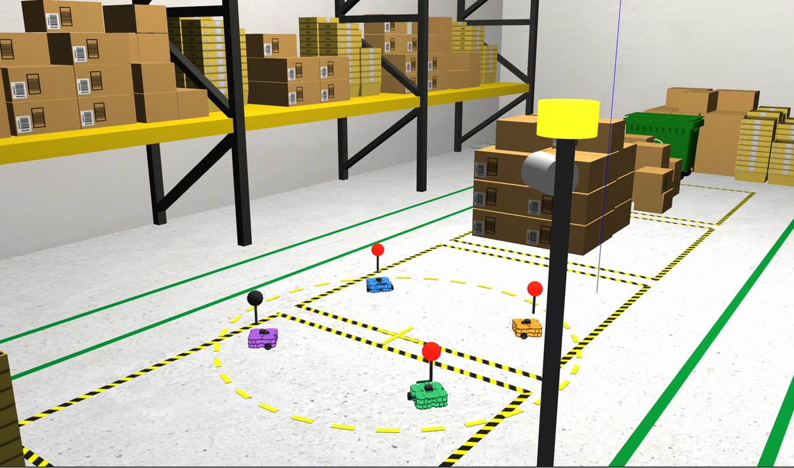
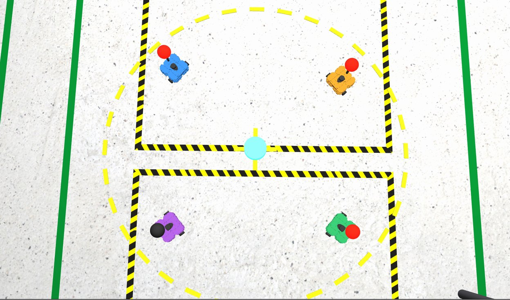
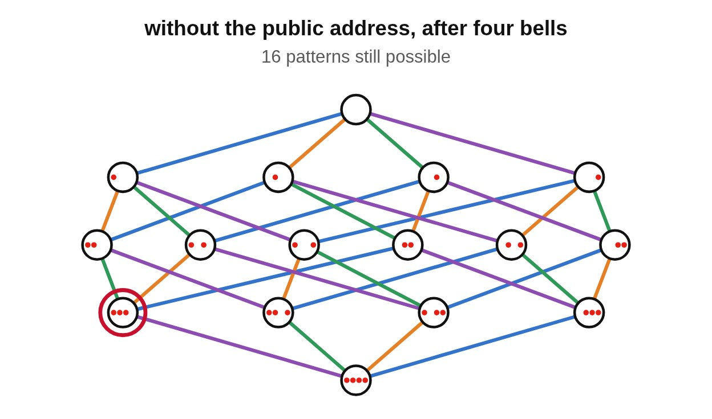
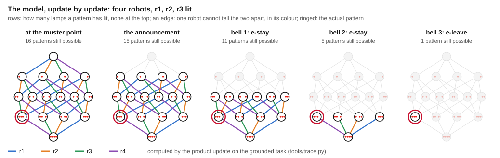
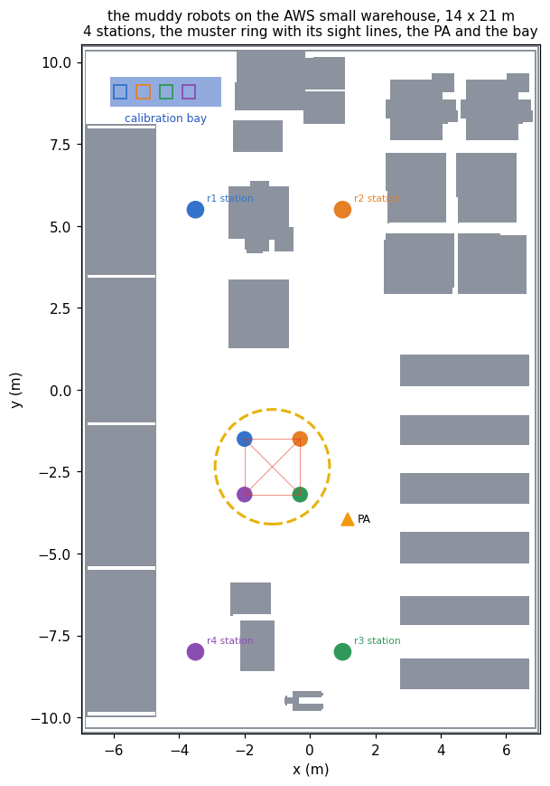

Common knowledge · the muddy children · AWS small warehouse · ROS 2
At the end of a shift four robots meet at the muster point of the AWS RoboMaker small warehouse. Each carries a status lamp, lit by the fleet's diagnostics when its calibration has drifted. Each robot sees every other robot's lamp and never its own. The supervisor knows that at least one lamp is lit, and not which. When a bell rings, every robot that knows it is faulty drives to the calibration bay; whether anyone left, every robot sees.
With three lamps lit, every robot already sees a lit lamp, so the supervisor's announcement over the public address, “at least one of you is faulty”, tells no robot anything it did not know. It is still what the bells need. Before it, “some lamp is lit” is mutual knowledge to depth \(E^2\) and not common knowledge; after it, it is common knowledge, and then a bell at which nobody moves is information: after two such bells the three faulty robots know, and at the third they leave. On the floor without a public address the planner proves that no policy exists, and four bells ring with nobody ever moving. The muddy children puzzle is the counterpart of the coordinated attack: there common knowledge was a precondition no lossy channel could supply; here a public announcement supplies it, of a fact everyone already knew.
The lamps are the floor's, and the planner is not told them: the initial model designates every fault pattern with a lamp lit, and the policy branches on what the bells show. What a robot knows is evaluated at the actual world, the pattern the lamps make the case, and never across the designated worlds, which are the executor's uncertainty and no robot's. Seeing is not simulated: that each robot sees every other lamp on the ring is checked on the floor plan, and the model takes it as given. The bay is a destination, not a repair.
Package muddy_robots_demo; policy from eplansys, grounding by plank, search by Aletheia. Full account in The Muddy Children at a Muster Point (PDF): the model, the proofs, the planning table, the runs and the defects found on the way.
The runs
| action | what the run reported | model after |
|---|---|---|
| assembly | every robot from its station to its place on the muster ring: r4 after 16 s, r3 19, r1 20, r2 25 | 16 worlds · \(E^2\) some lamp lit, blocked r1 → r2 → r3 |
| plan | a policy of 4 nodes and 4 leaves, in 0.1 s | |
| announce | “at least one of you is faulty”: every robot hears it, and hears that every other does | 15 · \(C\) |
| bell 1 | no robot knows whether it is faulty, and nobody moves → e-stay | 11 · \(C\) |
| bell 2 | nobody moves → e-stay; now r1, r2 and r3 know that they are faulty | 5 · \(C\) |
| bell 3 | r1, r2, r3 know they are faulty and leave for the calibration bay, nearest first, five seconds apart → e-leave; in the bay after 34, 41 and 48 s | 1 · r4 knows it is not |
| dismissal | each robot on what it knows: r1, r2 and r3 in the bay; r4 back to work, at its station after 20 s | every robot knows whether |
| action | what the run reported | model after |
|---|---|---|
| plan | no policy: Aletheia's relaxation proves the goal unreachable, in 0.2 s | 16 worlds · \(E^2\) |
| bells 1 to 4 | rung by hand, as many as there are robots: each time no robot knows whether it is faulty, and nobody moves → e-stay | 16 · \(E^2\), unchanged |
| dismissal | no robot knows its lamp, and every robot stays where it is | nobody knows |
What the runs show

The announcement From \(E^{k-1}\) to \(C\) With \(k\) lamps lit every robot sees one, and “some lamp is lit” holds to depth \(E^{k-1}\). The announcement adds no fact to any robot; it adds the rest of the depth. See the depth →
The bells Nobody moving is information Each bell at which nobody leaves removes every pattern with one more lamp lit. After \(k-1\) such bells the faulty robots know; at the \(k\)-th they leave, and the rest know they may stay. See the model →
Silence Without it, no bell informs Without the public address no robot ever knows its lamp, every bell is the identity update, and no policy exists at any depth. The planner proves it before searching. Read the proof →The domain
tools/muster.py writes the domain for \(N\) robots \(r_1,\dots,r_N\). The atoms are \(\mathit{faulty}(r_i)\), and \(\mathit{pa}\), whether the hall has a public address. The initial model is the hypercube: a world is a fault pattern \(u \in \{0,1\}^N\), and \(r_i\) relates two patterns that differ in its own lamp at most, so that it knows whether every other robot is faulty and not whether it is. Every pattern with a lamp lit is designated, since that much is true and the planner does not know which. The goal \(\gamma\) is that every robot knows whether it is faulty, \(\bigwedge_i \mathit{Kw}_{r_i}\,\mathit{faulty}(r_i)\).
| action | type | events | observers |
|---|---|---|---|
| announce | public announcement | pre \(\mathit{pa} \wedge \bigvee_i \mathit{faulty}(r_i)\) | every robot, fully |
| bell | public sensing | e-leave: \(\bigvee_i K_{r_i}\mathit{faulty}(r_i)\); e-stay: \(\bigwedge_i \neg K_{r_i}\mathit{faulty}(r_i)\) | every robot, fully |
The bell observes only whether anyone left. That is enough: once a robot leaves, every robot knows its own lamp, and seeing who left adds nothing. The robots that leave are the robots that know, at the actual world, that they are faulty; the crew checks each one's lamp before it moves, and refuses if the model says a robot knows something its lamp contradicts. After the policy every robot is dismissed on what it knows: to the bay if it knows it is faulty, back to work if it knows it is not, and nowhere if it does not know.
Before the announcement
An edge of the hypercube changes one lamp, so the nearest pattern with no lamp lit is \(k\) steps from a pattern with \(k\) lit, along a chain in which each robot in turn considers its own lamp dark. In the run with r1, r2 and r3 lit the chain is r1, then r2, then r3: r1 considers that r2 considers that r3 considers that no lamp is lit.
At a pattern with \(k\) lamps lit, the robots have \(E_G^{k-1}\) of “some lamp is lit”, and not \(E_G^{k}\).
After the announcement the part of the model reachable from a designated pattern is every pattern with a lamp lit, and “some lamp is lit” is common knowledge, \(C_G\).
So the announcement changes nothing any robot knows about the lamps. What it changes is the depth, from \(E^{k-1}\) to \(C\), in one update: the pattern with no lamp lit leaves the model, and every chain that ended there goes with it. This is the public announcement of the coordinated attack's beacon, made of a fact that was already known to everyone.
Without the public address
In the hypercube no robot knows whether it is faulty, at any world. Hence the bell's e-leave occurs nowhere, e-stay occurs everywhere, and the update leaves the reachable model as it was.
On the floor without a public address no sequence of actions makes \(\gamma\) hold, and no policy exists, of any depth.
The reason is the pattern with no lamp lit. Each robot considers, at every pattern, the pattern that differs from it in its own lamp, so it never knows that lamp. Nobody ever leaves, and that nobody leaves is common knowledge before the bell rings. Aletheia's knowledge relaxation reaches the same verdict before any search, at every \(N\) from two to ten, and the run confirms it: four bells, nobody moves, and the model is the one the robots started with.
After the announcement

After \(j\) silent bells the model is the patterns with at least \(j+1\) lamps lit. In it, \(r_i\) knows that it is faulty iff its lamp is lit and exactly \(j+1\) lamps are, and no robot knows that it is not faulty. The bell gives e-leave iff exactly \(j+1\) lamps are lit, and after it every robot knows whether it is faulty; otherwise it gives e-stay, and the model is the patterns with at least \(j+2\) lit.
With \(k\) lamps lit the first \(k-1\) bells give e-stay, after the \((k-1)\)-th the \(k\) faulty robots know, and the \(k\)-th gives e-leave. With \(k = N\) every robot knows after \(N-1\) bells.
The policy that announces and then rings until e-leave, or \(N-1\) times, satisfies \(\gamma\) at every leaf; it has depth \(N\) and \(N\) leaves, and no policy of smaller depth exists.
The proofs are in the report. The run follows the corollary to the bell: e-stay, e-stay, e-leave, with the robots able to consider 15, then 11, then 5 patterns, and r1, r2 and r3 knowing after the second bell, as the knowledge view logged.
Planning
Both floors grounded by plank and solved by Aletheia with AO\(^*\) at one thread. Every policy was replayed by tools/trace.py, which found the goal at every leaf, the leaves covering all \(2^N-1\) fault patterns between them. Without the public address the knowledge relaxation proves the goal unreachable before any search, at every \(N\).
| robots | worlds | designated | with the public address | expansions | time |
|---|---|---|---|---|---|
| 2 | 4 | 3 | depth 2, 2 leaves | 9 | 0.00 s |
| 3 | 8 | 7 | depth 3, 3 leaves | 18 | 0.00 s |
| 4 | 16 | 15 | depth 4, 4 leaves | 30 | 0.01 s |
| 5 | 32 | 31 | depth 5, 5 leaves | 45 | 0.01 s |
| 6 | 64 | 63 | depth 6, 6 leaves | 63 | 0.02 s |
| 7 | 128 | 127 | depth 7, 7 leaves | 84 | 0.05 s |
| 8 | 256 | 255 | depth 8, 8 leaves | 108 | 0.15 s |
| 9 | 512 | 511 | depth 9, 9 leaves | 135 | 0.43 s |
| 10 | 1024 | 1023 | depth 10, 10 leaves | 165 | 1.12 s |
The depth is Proposition 3's and so minimal. The expansions are exactly \(3N(N+1)/2\) in every row, an observation about this search and not a theorem.
The floor

Nothing of the AWS world is moved. The ring, the bay and the public address are added as visuals that collide with nothing, so the floor plan the robots drive on is still the world's. tools/check_floor.py checks the two claims the domain makes about it, for three, four and five robots, by casting rays over the occupied cells: on the ring every robot has every other robot in line of sight, and every place a robot is sent is reachable over the plan inflated by the driver's 0.35 m.
Defects
Limits
References
Reproduction
ros2 launch muddy_robots_demo muddy_robots_launch.py # public address; r1, r2, r3 lit ros2 launch muddy_robots_demo muddy_robots_launch.py faults:=r2 # one lamp lit ros2 launch muddy_robots_demo muddy_robots_launch.py floor:=silent # no public address bash tools/validate.sh # planner, trace and floor checks, no simulator python3 tools/muster.py --robots 6 --out /tmp/mr # the domain and both floors for six robots python3 tools/trace.py --task /tmp/mr/pa-n4/pa-n4.json --faults r1 r2 r3 --bells 4 python3 tools/check_floor.py --robots 4 bash tools/record_demo.sh pa r1,r2,r3 /tmp/raw_pa.mkv /tmp/run_pa.log